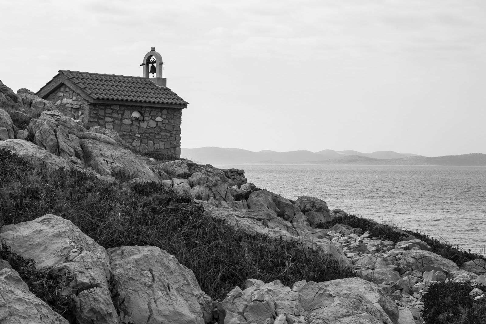

On ne s'attend pas à la trouver là.
Au bout du sentier, après les rochers qui cassent les chevilles, après le vent qui pousse en sens inverse, il y a cette chapelle. Petite, en pierre, avec sa cloche qui dépasse comme une question.
La mer est derrière. Les îles flottent dans le gris. Tout est immobile, sauf le mistral qui travaille en silence.